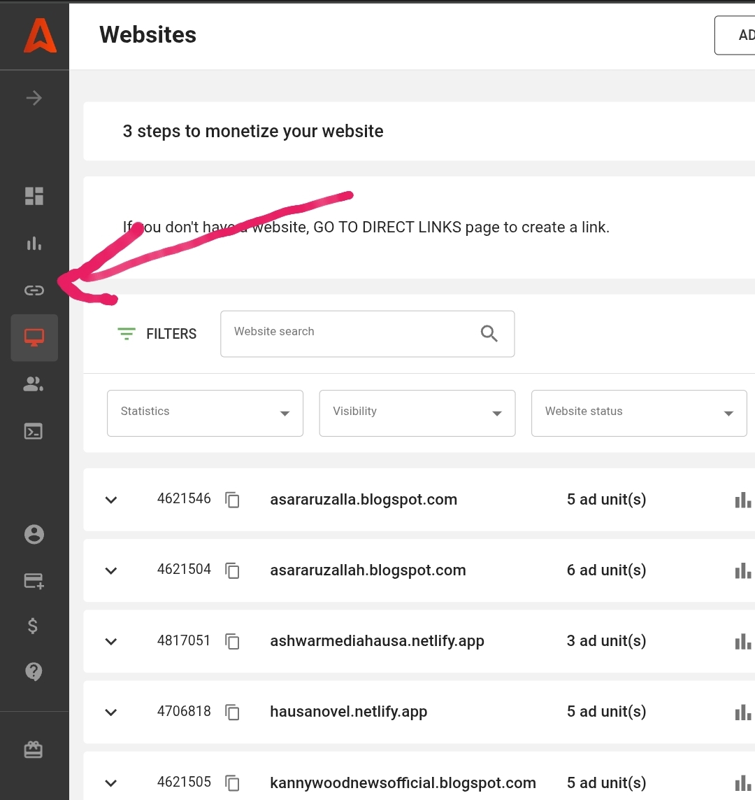
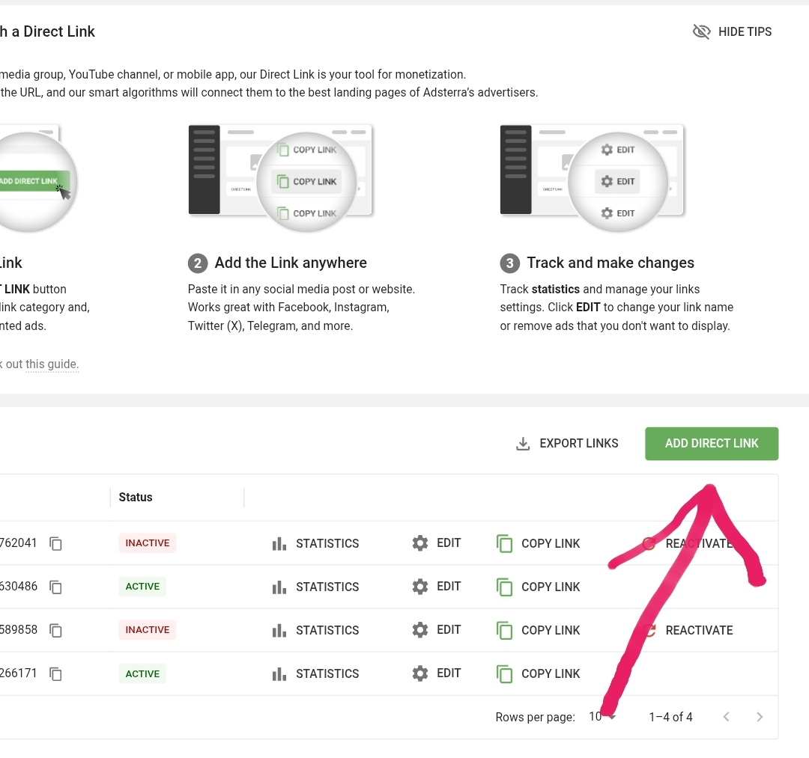
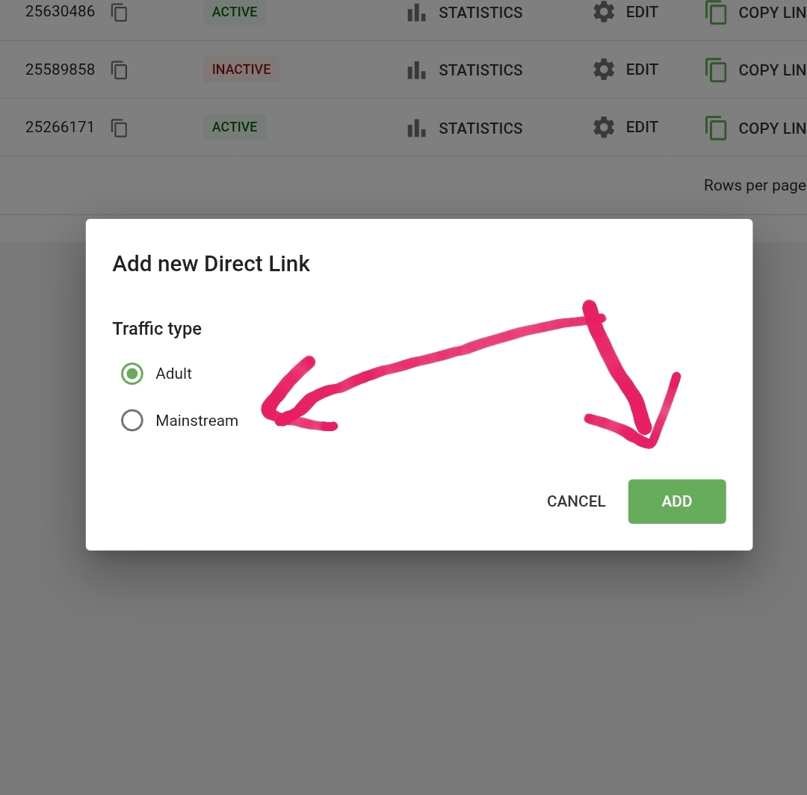
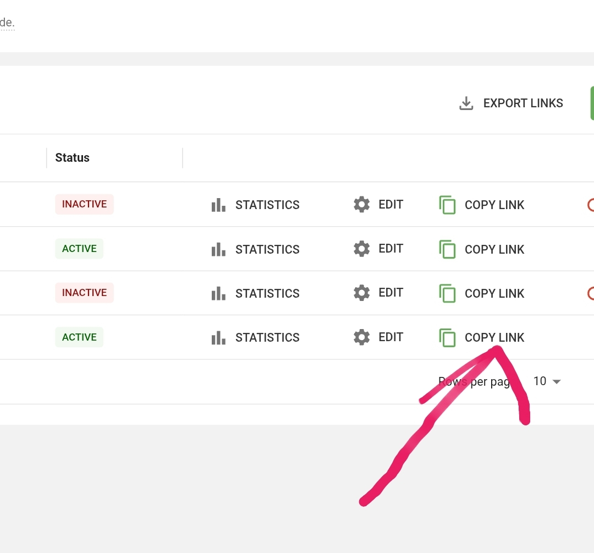
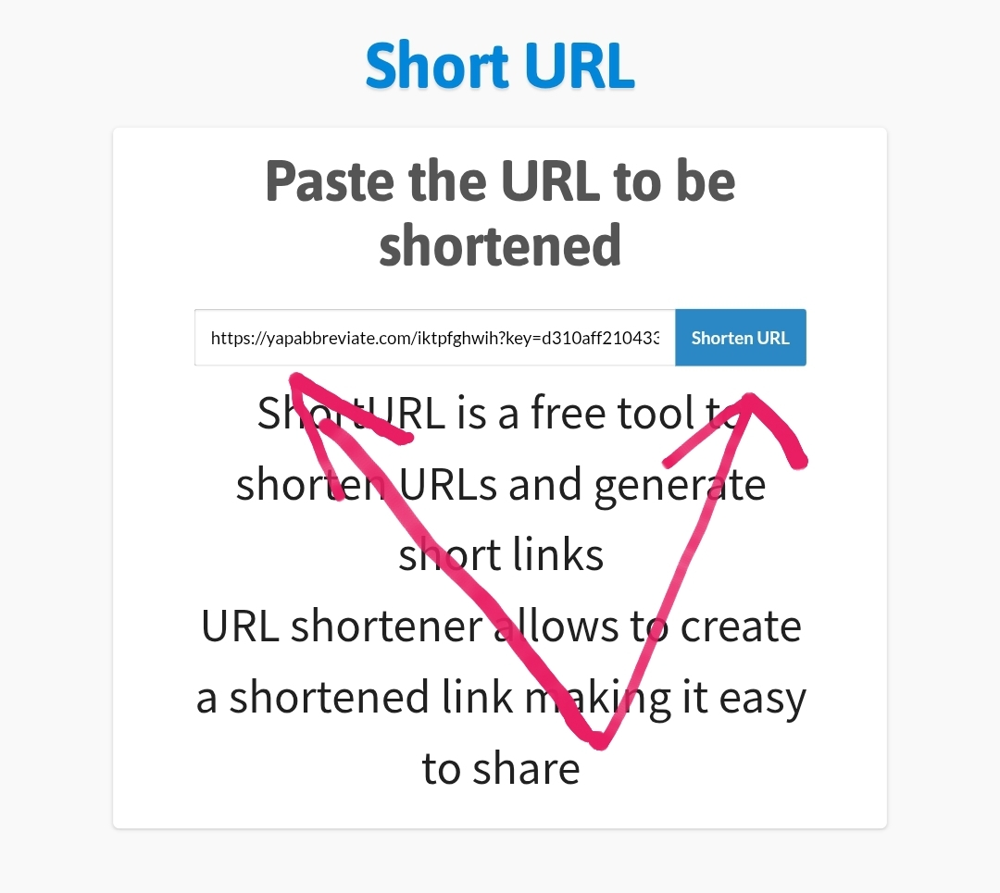

Yadda Ake Samun Kudi A Online 2025
Published by: Muawiya Muzzy
🔰 Gabatarwa
A yau mutane da dama na tambaya: Yadda ake samun kudi a intanet? Wannan tambayar ta zama ruwan dare musamman ga matasa masu amfani da Facebook da WhatsApp. Daya daga cikin hanyoyin da aka tabbatar da cewa tana kawo kudi online shine amfani da Adsterra Direct Link da Referral Program.
📌 Mece Ce Adsterra?
Adsterra wata babbar kafa ce ta tallace-tallace (advertising network) wadda ke bawa mutane damar samun kudi daga intanet ko da ba su da website. Zaka iya raba direct links ko gayyatar mutane su shiga ta hanyar referral link ka ci riba.
🧩 Yadda Ake Samun Kudi Da Adsterra Direct Link
📋 Matakai:
Yi rijista a Adsterra ta wannan link: 👉
Register Here sai ka shiga dashboard bayan kayi register, to a A dashboard, sai ka nemi “Direct Link” kamar yadda kake gani a hoto:

Kai tsaye sai ka dannan inda kaga an saka
Add Direct Links
ka nemi approval, kamar yadda kake gani a hoto:

Bayan ka danna zasu nuno maka ka zabi Adult ko Mainstream to sai ka zabi mainstream amma zaka iya zaban adult din sai dai adult din zasu ke sako maka tallah harda na batsa, bayan ka gama zabin ka sai ka danna add kamar yadda kuke gani a hoto:

kai tsaye zaka jira nan da mintuna 5 haka sai ka sake yin refreshing din website din zaka ga sunyi approving na links din, to sai kayi copy din links din kamar yadda kuke gani a hoto:

wannan links dinka shine sirrin samun kudinka, saboda haka idan ka samu link ɗin, kada ka raba shi kai tsaye kamar haka. Maimakon haka:
🧠 Yi amfani da website dake chanza sunan url ma ana URL Shortener kamar:
bitly.com
tinyurl.com
cutt.ly
Ko Nigeria-based shorteners idan kana da su.
Misali:
Idan kayi copy na url dinka sai kaje wani website mai suna shorturl.at sai kayi paste na url dinka sannan sai ka dannan maballin da aka rubuta Shorten Url kamar yadda kake gani a hoto:

Bayan ka danna zai baka wani sabon url to wannan sabon url din shi zakayi copy sannan sai kayi ta sharing group na whatsapp ko facebook da sauransu duk wanda ya danna links din to zaka samu yan kudade
💡 Me yasa shortening yake da amfani?
Link zai zama mai saukin raba a Facebook, WhatsApp, da Telegram.
Zaka iya duba clicks, wato adadin mutanen da suka latsa.
Zai rage hadarin link ɗin a ɗauka da spam.
📣 Hanyoyin Raba Link Don Samun Kuɗi:
Facebook groups da ke da yawan members.
WhatsApp status da broadcast list.
TikTok (a bio ko cikin video).
Instagram Story da Highlights.
Telegram channel da reply a trending posts.
Ka rubuta abu mai jan hankali misali kamar haka:
“Wani sabon site da kake samun kudi daga danna link kawai, duba nan 👇”
https://bit.ly/SamunKudiAdsterra
💰 Referral Program – Karin Hanya Don Samun Kuɗi
Adsterra na bada 5% na kudin da wanda ka gayyata ke samu. Wannan hanya ce ta passive income — ko baka yi komai ba, idan wanda ka gayyata na amfani da Adsterra, kai ma kana samun kuɗi.
👉 Referral link ɗinka:
Register here
🧠
Shawarwari:
Kar ka cika spam, ka haɗa link da labari ko nasihu.
Rubuta karamin blog post a Facebook ko Medium, saka shortened link.
Ka rika duba dashboard ɗinka domin gano inda clicks ke fitowa ta nan zaka gane abunda.
📌
Kammalawa
Yadda ake samun kudi a intanet ya fi sauki fiye da yadda kake tunani idan ka yi amfani da hanyoyi kamar Adsterra Direct Link da Referral Program. Ka tabbata ka yi rijista yanzu, ka fara raba link dinka domin samun kuɗi daga gida.
🟢 Yi rijista ta wannan link:
👉:
Register here
By Muawiya Muzzy | 25 Feb 2025
All Right Reserved